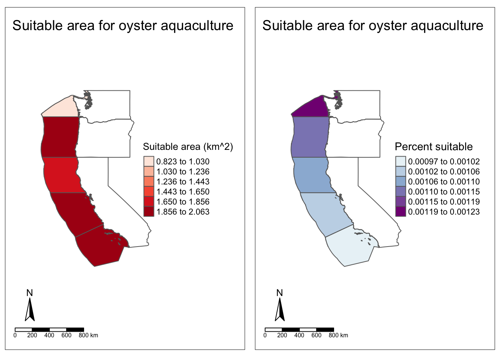
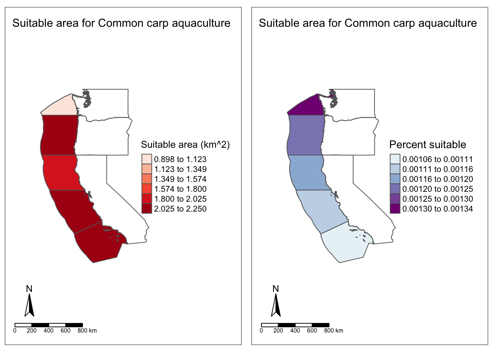

Code
# Load required packages
library(sf)
library(terra)
library(here)
library(dplyr)
library(raster)
library(tmap)
library(spData)December 12, 2023
Marine aquaculture has the potential to be an important solution to meet the future demand for protein-rich food while simultaneously ensuring environmental sustainability (Costello et al. 2020). Increases in the demand for seafood have already resulted in an industry shift from wild fisheries to terrestrial aquaculture, with farmed seafood products currently making up about 50% of the global seafood supply. However, concerns about the sustainability of further expanding terrestrial aquaculture suggest that increasing the development of marine aquaculture farms might play a substantial role in a comprehensive solution.
Furthermore, the U.S. West Coast represents an area where such marine aquaculture expansion could take place. In fact, the State of Washington currently leads the nation in marine aquaculture development. From 2005 to 2018, Washington generated over $200 million from these sea-based farms, about 40% of nationwide revenue during that same period (Froehlich et al. 2022).
This analysis seeks to build on knowledge regarding the potential for marine aquaculture expansion in the four Exclusive Economic Zones (EEZs) adjacent to the U.S. West Coast. Using raster data on mean sea surface temperature and depth, I’ll estimate the total and percent area within each of these four EEZs that would be suitable for oyster aquaculture. After visualizing oyster suitability, I’ll create a generalized model that can be used for any species based on their ideal temperature and depth ranges.
For temperature, we will use a stacked 1 km by 1 km gridded raster with data collected by the National Oceanic and Atmospheric Association (National Oceanic and Atmospheric Association (NOAA) 2018). There are a total of five layers, one for each year from 2008 through 2012. The values in each grid cell correspond to the area’s mean sea surface temperature for that year.
# Store list of SST tif files
sst_files <- list.files(here("data/2023-12-13-post-data"), pattern = "\\d\\.tif$", full.names = TRUE)
# Store first raster to use as reference raster
reference_raster <- raster(sst_files[1])
# Create an empty list
sst_processed <- list()
# Loop through each raster file
for (file in sst_files) {
# Read the raster
r <- raster(file)
# Resample the raster using the reference raster
r_resampled <- resample(r, reference_raster)
# Crop the raster using the extent of reference raster
r_cropped <- crop(r_resampled, extent(reference_raster))
# Add the processed raster to the list
sst_processed[[file]] <- r_cropped
}
# Stack the processed rasters
sst_stacked <- stack(sst_processed)
# Create new SST raster for mean SST from 2008 to 2012
mean_sst <- mean(sst_stacked, na.rm = TRUE)
# Convert SST data from Kelvin to Celsius
mean_sst <- mean_sst - 273.15The bathymetry raster that we will be using characterizes ocean depth at a spatial resolution of 1 meter grid cells. We get this data from the General Bathymetric Chart of the Oceans (General Bathymetric Chart of the Oceans (GEBCO) 2023).
This data comes from Marine Regions, which is managed by the Flanders Marine Institute (Marine Regions, n.d.).
Reading layer `wc_regions_clean' from data source
`/Users/linusghanadan/Documents/MEDS/other/linusghanadan.github.io/data/2023-12-13-post-data/wc_regions_clean.shp'
using driver `ESRI Shapefile'
Simple feature collection with 5 features and 5 fields
Geometry type: MULTIPOLYGON
Dimension: XY
Bounding box: xmin: -129.1635 ymin: 30.542 xmax: -117.097 ymax: 49.00031
Geodetic CRS: WGS 84Now that we have processed the data, we can move on to figuring out where oyster aquaculture is suitable in West Coast EEZs. Oysters generally reside in waters with a sea surface temperature of 11 to 30 degrees Celsius and at a depth of 0 to 70 meters below sea level (Froese and Pauly 2023). Thus, we will use these ranges to build a suitability raster and then crop to only include areas in West Coast EEZs.
# Make binary raster with values of 1 where SST is 11-30 degrees Celsius (otherwise NA)
rcl = matrix(c(-Inf, 11, NA,
11, 30, 1,
30, Inf, NA), ncol = 3, byrow = TRUE)
sst_binary <- reclassify(mean_sst, rcl = rcl)
# Make binary raster with values of 1 where depth is 0-70 meters below sea level (otherwise NA)
rcl = matrix(c(-Inf, 0, NA,
0, 70, 1,
70, Inf, NA), ncol = 3, byrow = TRUE)
depth_binary <- reclassify(depth, rcl = rcl)
# Multiply cell values in both binary rasters to create mask raster of suitable locations for oysters
oyster_mask <- overlay(sst_binary, depth_binary, fun = '*')
# Crop mask based on EEZ data
oyster_mask <- crop(oyster_mask, eez)Next, we calculate the total number of cells that are suitable. In this case, this is equivalent to the cell areas in meters squared, as the grid cell resolution is one meter by one meter. We also convert the cell areas data and EEZ area data to raster form, so we can perform our calculation in the next step.
# Calculate total number of cells that are suitable
cell_areas <- cellStats(oyster_mask, stat = "sum", na.rm = TRUE)
# Create raster for cell areas and populate
cell_areas_raster <- raster(oyster_mask)
cell_areas_raster[] <- cell_areas
# Convert EEZ data to raster
eez_raster <- rasterize(eez, oyster_mask)To calculate total and percent suitable area for each EEZ, we use the zonal() function from the raster package in R. This function allows us to calculate the sum of suitable grid cells within each EEZ, as our EEZ raster labels each grid cell as part of one of the five West Coast EEZs.
# Bind EEZ data with total area and percent calculations
eez_joined <- cbind(eez, total_suitable_area, percent_suitable_area) %>%
mutate("Suitable area (km^2)" = value / 1000000) %>%
mutate("Percent suitable" = value.1) %>%
dplyr::select(-value, -value.1, -zone, -zone.1)
# Store polygons for U.S. West Coast States from spData package
CA <- us_states %>%
filter(NAME == "California")
OR <- us_states %>%
filter(NAME == "Oregon")
WA <- us_states %>%
filter(NAME == "Washington")
# Initialize new bbox using EEZ bbox
bbox_new <- st_bbox(eez)
# Create variable for x range of bbox
xrange <- bbox_new$xmax - bbox_new$xmin
# Set new x range for bbox
bbox_new[3] <- bbox_new[3] + (0.9 * xrange)
# Convert bbox to sfc
bbox_new <- bbox_new %>%
st_as_sfc()
# Create plot of total suitable area for oysters in U.S. West Coast EEZs
total_area_map <-
tm_shape(eez_joined, bbox = bbox_new) +
tm_fill("Suitable area (km^2)", palette="Reds", style = "equal", n=6) +
tm_borders() +
tm_shape(CA) +
tm_borders() +
tm_shape(OR) +
tm_borders() +
tm_shape(WA) +
tm_borders() +
tm_compass(position = c("left", "bottom")) +
tm_scale_bar(position = c("left", "bottom")) +
tm_layout(title = "Suitable area for oyster aquaculture") +
tm_layout(legend.position = c("right", "center")) +
tm_layout(inner.margins = 0.15)
# Create plot of percent suitable area for oysters in U.S. West Coast EEZs
tmap_mode("plot")
percent_area_map <-
tm_shape(eez_joined, bbox = bbox_new) +
tm_fill("Percent suitable", palette="BuPu", style = "equal", n=6) +
tm_borders() +
tm_shape(CA) +
tm_borders() +
tm_shape(OR) +
tm_borders() +
tm_shape(WA) +
tm_borders() +
tm_compass(position = c("left", "bottom")) +
tm_scale_bar(position = c("left", "bottom")) +
tm_layout(title = "Suitable area for oyster aquaculture") +
tm_layout(legend.position = c("right", "center")) +
tm_layout(inner.margins = 0.15)
tmap_mode("plot")
tmap_arrange(total_area_map, percent_area_map)
Now that we have performed a suitability analysis for oysters in West Coast EEZs, we can broaden our workflow by building a function that provides us the same type of data visualizations for any species based on inputs of desired range for sea surface temperature and depth. We will first build our function and then test it out using suitability parameters for the Common carp.
# Reproducible workflow function for any species
suitable_aqua <- function(species, tempmin, tempmax, depthmin, depthmax) {
rcl_fun <- matrix(c(-Inf, tempmin, NA,
tempmin, tempmax, 1,
tempmax, Inf, NA), ncol = 3, byrow = TRUE)
sst_binary_fun <- reclassify(mean_sst, rcl = rcl_fun)
rcl_fun = matrix(c(-Inf, depthmin, NA,
depthmin, depthmax, 1,
depthmax, Inf, NA), ncol = 3, byrow = TRUE)
depth_binary_fun <- reclassify(depth, rcl = rcl_fun)
raster_mask_fun <- overlay(sst_binary_fun, depth_binary_fun, fun = '*')
raster_mask_fun <- crop(raster_mask_fun, eez)
if (all(unique(raster_mask_fun) %in% c(1, NA))) {
} else {stop("Error in code. Mask contains values other than 1 or NA.")}
cell_areas_fun <- cellStats(raster_mask_fun, stat = "sum", na.rm = TRUE)
cell_areas_raster_fun <- raster(raster_mask_fun)
cell_areas_raster_fun[] <- cell_areas_fun
eez_raster_fun <- rasterize(eez, raster_mask_fun)
total_suitable_area_fun <- zonal(cell_areas_raster_fun, eez_raster_fun, fun = sum, na.rm = TRUE)
percent_suitable_area_fun <- (total_suitable_area_fun / eez$area_m2) * 100
eez_joined_fun <- cbind(eez, total_suitable_area_fun, percent_suitable_area_fun) %>%
mutate("Suitable area (km^2)" = value / 1000000) %>%
mutate("Percent suitable" = value.1) %>%
dplyr::select(-value, -value.1, -zone, -zone.1)
if (any(eez_joined_fun$`Percent suitable` < 0 | eez_joined_fun$`Percent suitable` > 100)) {
stop("Error in code. At least one percent area is not between 0 and 100.")
} else {}
CA <- us_states %>%
filter(NAME == "California")
OR <- us_states %>%
filter(NAME == "Oregon")
WA <- us_states %>%
filter(NAME == "Washington")
bbox_new_fun <- st_bbox(eez)
xrange_fun <- bbox_new_fun$xmax - bbox_new_fun$xmin
bbox_new_fun[3] <- bbox_new_fun[3] + (0.9 * xrange_fun)
bbox_new_fun <- bbox_new_fun %>%
st_as_sfc()
total_area_map_fun <-
tm_shape(eez_joined_fun, bbox = bbox_new_fun) +
tm_fill("Suitable area (km^2)", palette="Reds", style = "equal", n=6) +
tm_borders() +
tm_shape(CA) +
tm_borders() +
tm_shape(OR) +
tm_borders() +
tm_shape(WA) +
tm_borders() +
tm_compass(position = c("left", "bottom")) +
tm_scale_bar(position = c("left", "bottom")) +
tm_layout(title = paste("Suitable area for", species,"aquaculture")) +
tm_layout(legend.position = c("right", "center")) +
tm_layout(inner.margins = 0.15)
percent_area_map_fun <-
tm_shape(eez_joined_fun, bbox = bbox_new_fun) +
tm_fill("Percent suitable", palette="BuPu", style = "equal", n=6) +
tm_borders() +
tm_shape(CA) +
tm_borders() +
tm_shape(OR) +
tm_borders() +
tm_shape(WA) +
tm_borders() +
tm_compass(position = c("left", "bottom")) +
tm_scale_bar(position = c("left", "bottom")) +
tm_layout(title = paste("Suitable area for", species,"aquaculture")) +
tm_layout(legend.position = c("right", "center")) +
tm_layout(inner.margins = 0.15)
return(tmap_arrange(total_area_map_fun, percent_area_map_fun))}Compared to oysters, the Common carp can handle slightly more extreme temperatures (3 to 35 degrees Celsius) (Froese and Pauly 2023). However, unlike oysters who thrive in depths of up to 70 meters below sea level, the Common carp can only handle up to 29 meters. We can apply our generalized function to see what this means in term of how suitability differs for the Common carp.

The two maps are very similar in terms of how the different EEZs compare to each other, but a closer inspection of the legend values does show us that the Common carp has a consistently higher amount of suitable area. Hence, the larger temperature range was more important for suitability than the narrower depth range.
The main takeaway from this analysis is that we were able to build a model that helps us better understand which West Coast EEZs are best suited for marine aquaculture of certain species based on ideal ranges for sea surface temperature and depth. To demonstrate how this model could be used, this analysis looked at suitability for oysters and the Common carp. Specifically, our comparison showed that having a larger temperature range (3-35 degrees Celsius for carp compared to 11-30 degrees Celsius for oysters) was more important for suitability than having a narrower depth range (0-29 meters for carp compared to 0-70 meters for oysters).
This being said, there are certainly limitations in using our model. For one, using a sea surface temperature raster with finer resolution would give us more precise estimates. In addition, this analysis did not look at where marine aquaculture currently exists on the West Coast. This model could be improved upon by subtracting areas that are already being used for marine aquaculture. Lastly, a more robust model would look at more variables than just sea surface temperature and depth. Further analysis might include additional water variables with conditional ranges for different species, such as degree hardness (dH) and potential of hydrogen (pH).
@online{ghanadan2023,
author = {Ghanadan, Linus},
title = {Reproducible Workflow to Gauge Suitability of Species for
{U.S.} {West} {Coast} Marine Aquaculture},
date = {2023-12-12},
url = {https://linusghanadan.github.io/blog/2023-12-13-post/},
langid = {en}
}